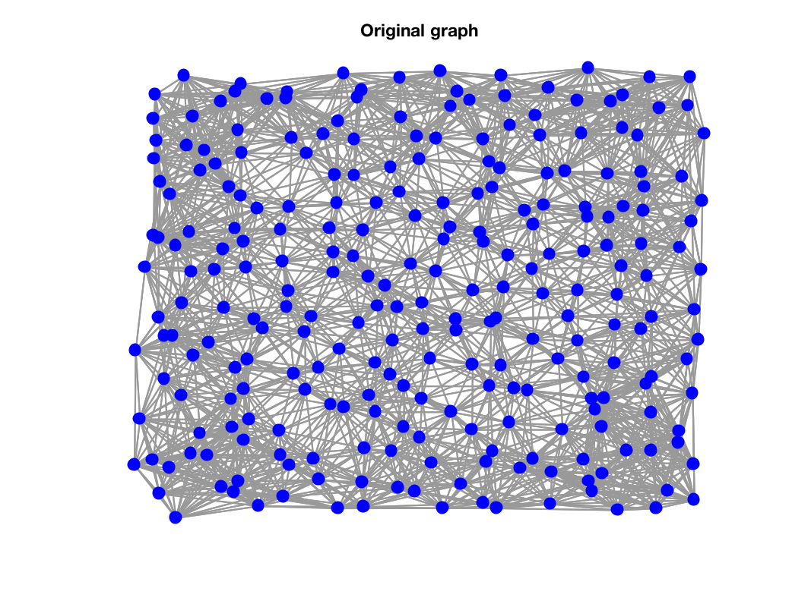
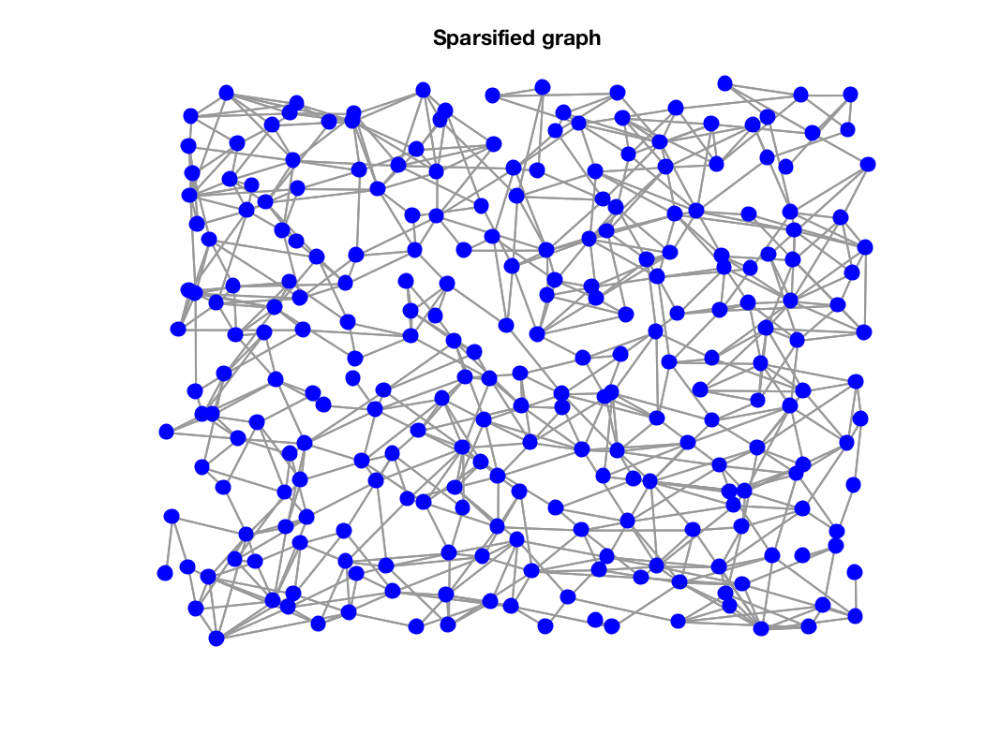

Gnew = gsp_graph_sparsify(G,epsilon);
| G | Graph structure or Laplacian matrix |
| epsilon | Sparsification parameter |
This function sparsifies a graph using Spielman-Srivastava algorithm. Note that epsilon should be between \(1/\sqrt(N)\) and \(1\).
Example:
epsilon = 0.5;
param.distribute = 1;
nnparam.k = 20;
param.nnparam = nnparam;
G = gsp_sensor(256,param);
G2 = gsp_graph_sparsify(G,epsilon);
figure(1)
gsp_plot_graph(G);
title('Original graph')
figure(2)
gsp_plot_graph(G2);
title('Sparsified graph')


D. A. Spielman and N. Srivastava. Graph sparsification by effective resistances. SIAM Journal on Computing, 40(6):1913--1926, 2011.
M. Rudelson. Random vectors in the isotropic position. Journal of Functional Analysis, 164(1):60--72, 1999.
M. Rudelson and R. Vershynin. Sampling from large matrices: An approach through geometric functional analysis. Journal of the ACM (JACM), 54(4):21, 2007.